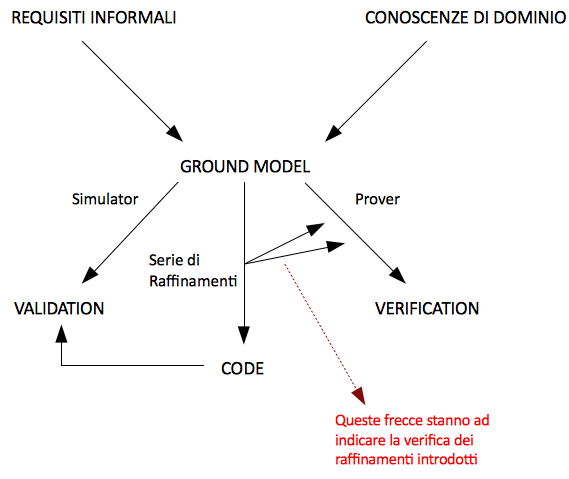

Torna alla pagina di Modellazione ed Analisi di Sistemi
:: Modellazione ed Analisi di Sistemi - Ground Model e Raffinamento ::
Ove non meglio specificato, tutti i testi tra virgolette vanno intesi come citazioni letterali dalle slide della prof Riccobene Elvinia Maria, 2010.
Nella figura possiamo analizzare il funzionamento del metodo ASM:

Si parte dalle specifice fornite dai requisiti informali e da eventuali conoscenze di dominio, per arrivare al Ground Model. Da questo punto è possibile effettuare una serie di Raffinamenti i quali dovranno essere verificati al fine di non introdurre inconsistenze.
Un Ground Model deve essere:
Prima di sviluppare un sistema software bisogna specificare tutti i requisiti che esso dovrà possedere, il Ground Model può essere visto come un'istantanea di tutti questi requisiti.
Abbiamo detto che un Ground Model deve essere astratto ebbene, quale livello di astrazione scegliere?
Più cresce il numero di proprietà che si vogliono inserire in un modello più cresce la difficoltà nel verificare che tutte queste proprietà siano soddisfatte. Dal momento che lo scopo principale del modello è verificare che tutte le sue proprietà sono soddisfatte, nasce l'esigenza di rendere tale modello più semplice possibile.
Come creo un Ground Model?
I passi per creare un ground model sono i seguenti:
Un passo importante nello sviluppo di modelli è quello di poter raffinare i requisiti fatti in partenza.\\
Per fare un esempio di raffinamento si prenda come riferimento il modello della Morra Cinese. Nel modello iniziale si prende in considerazione lo svolgimento puro e semplice del gioco, quindi chi tra player e pc vince. Un possibile raffinamento potrebbe essere quello di mantenere il numero di vittorie delle due parti in gioco.
L'obiettivo è quello di partire da obbiettivi formali di partenza, raffinarli passo dopo passo per arrivare ad avere delle specifiche definite in un linguaggio molto simile ad un linguaggio di programmazione.
L'idea è quella di passare la macchina ASM M alla macchina ASM M*, dove è possibile eliminare qualche proprietà dalla prima macchina e aggiungere qualcosa nella seconda macchina.
L'idea di raffinamento è marcata dalla figura che rappresenta queste due macchine. La macchina ASM M* è un raffinamento della macchina ASM M, introducendo stati intermedi. La conseguenza del raffinamento è che le due macchine avranno un tempo di esecuzione diverso.